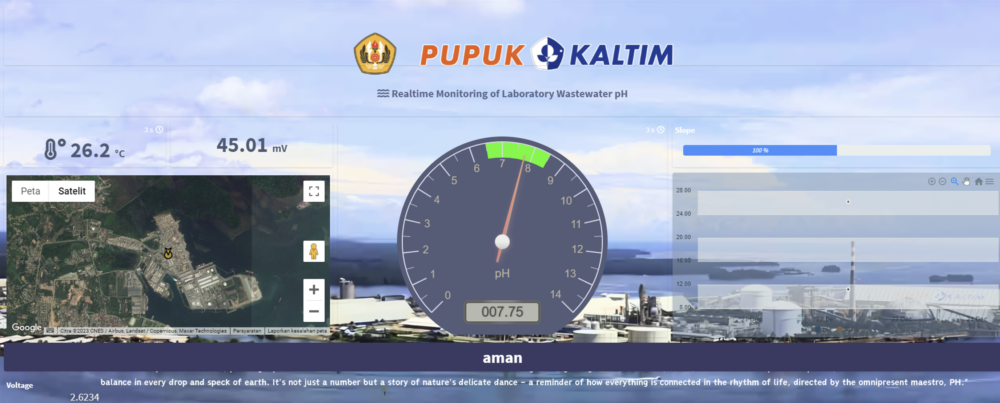
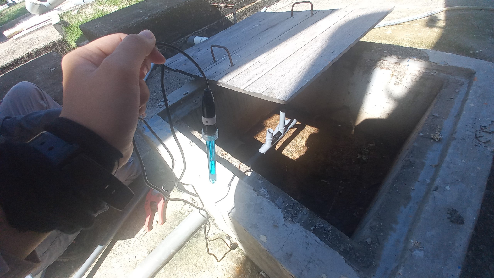
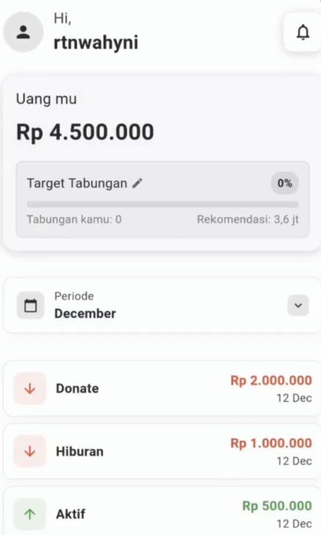
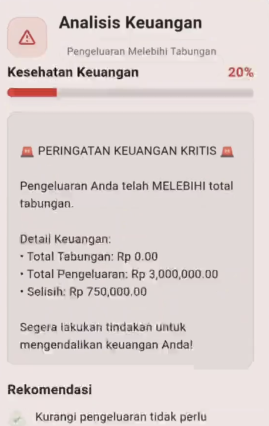
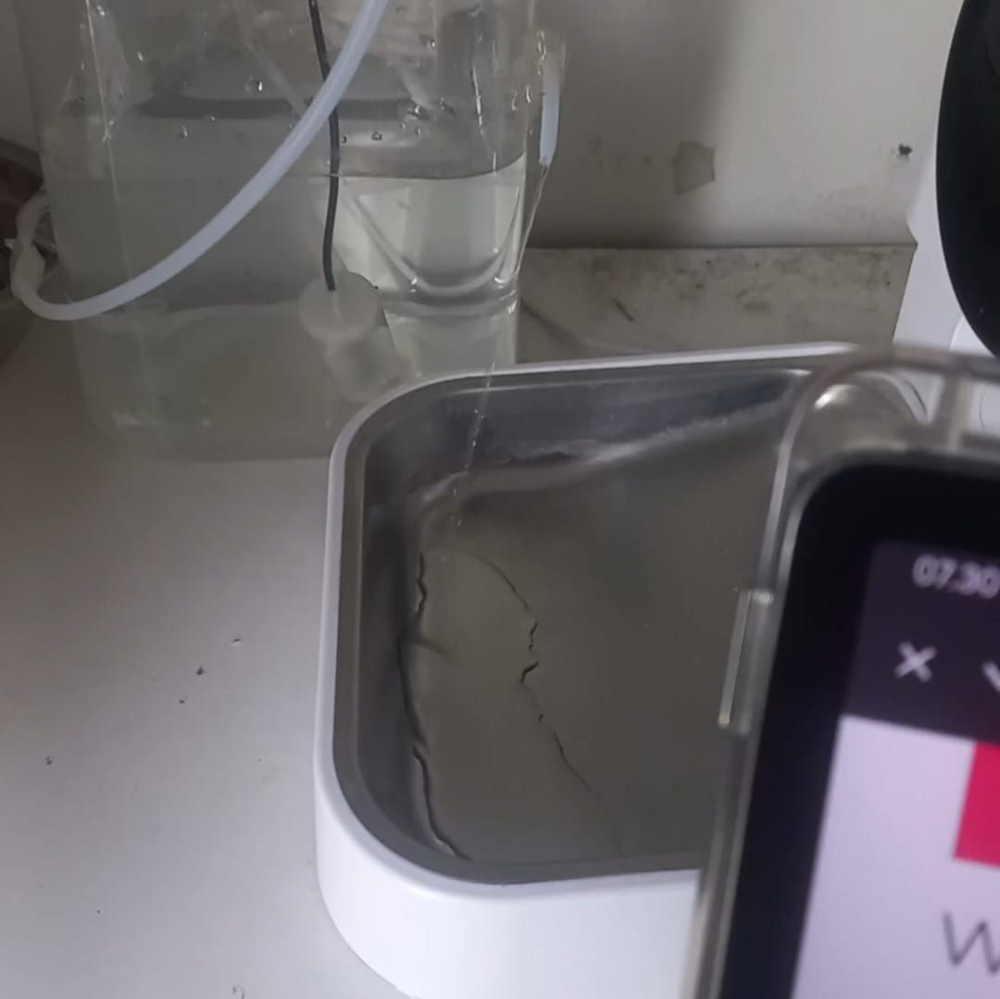
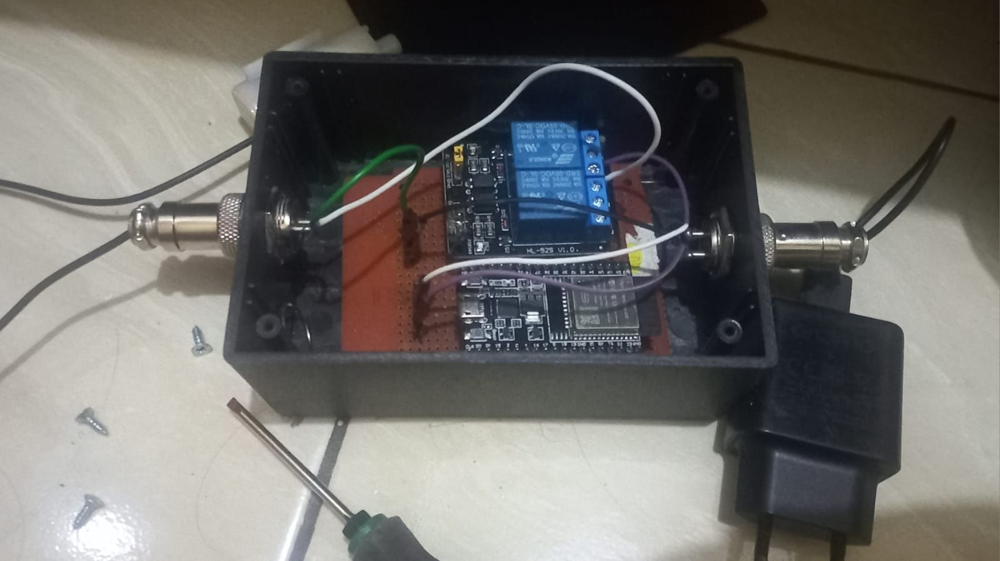
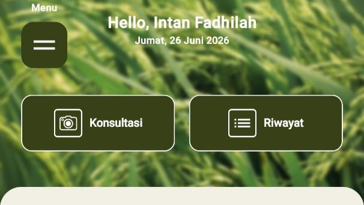
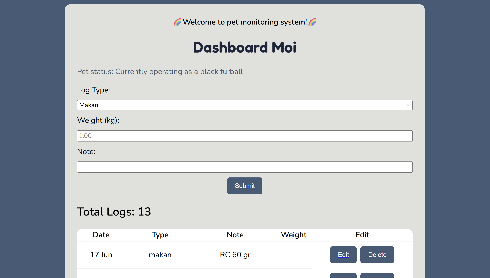

Halo, I'm Intan!
Agricultural Engineering Student & Agricultural Technology Enthusiast
About Me
I am interested in the application of technology in agriculture, and I'd love to learn to implement it on urban farming!
I enjoy learning about programming, automation systems, and data-driven solutions to solve problems.
Currently completing my studies in Agricultural Engineering at Padjadjaran University. My thesis focuses on redesigning DSS application services using open source software.
Skills
Projects


Wastewater pH Monitoring
Industrial Internship | October 2023 - January 2024
An industrial internship project at PT Pupuk Kalimantan Timur, focused on real-time monitoring wastewater pH and other sensors related.
Completed

EzMoney
Bangkit Academy Capstone | November 2024 - December 2024
Personal finance application with machine learning-based savings recommendations and spending anomaly detection.
Completed* Live demo unavailable (hosting expired).


Automatic Pet Water Dispenser
Personal IoT Project | November 2025 - December 2025
A personal IoT project that automates pet water dispensing based on scheduled watering times.
Completed
DSS Padi - Backend System Development
Research Project | Started in 2025
A bachelor thesis project, I contributed to the database redevelopment by redesigning the database and developing Python scripts for data control.
In Progress
Pet Health Tracker
Personal Web Project | Started in 2026
A personal project focused on web application (CRUD) for pet health tracking using technology and data.
In ProgressContact Me
Email: intan20008@mail.unpad.ac.id
WhatsApp: +62 81291883156